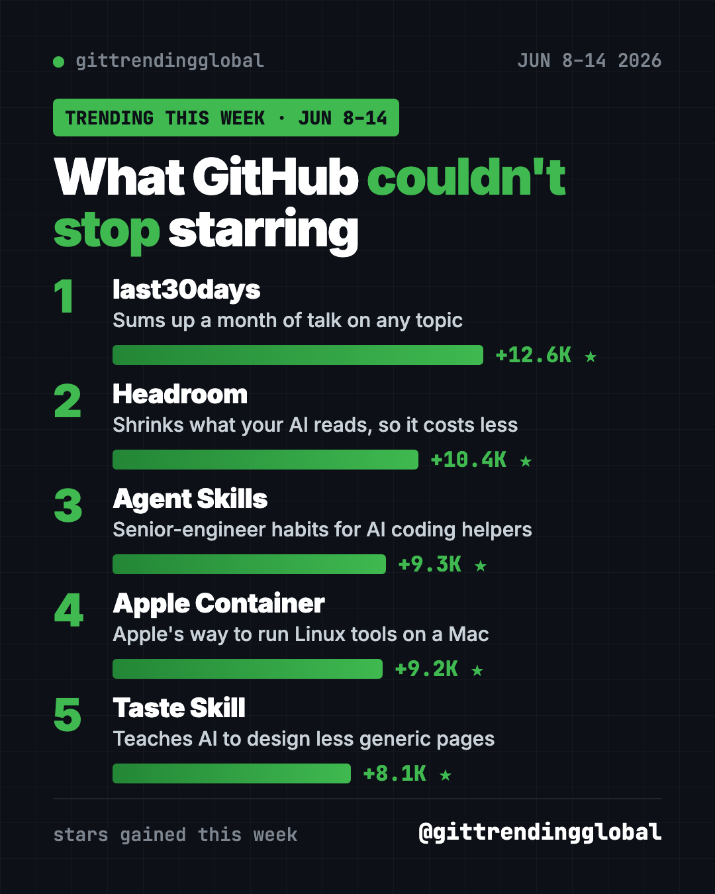
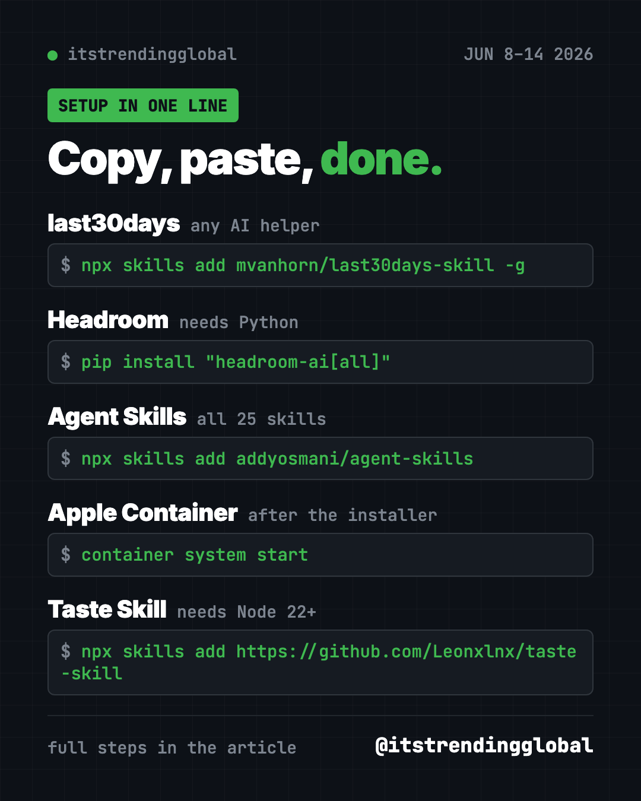

Home › Top repos › GitHub trending this week
Top GitHub Repos the Week of June 8, 2026 (Explained)
- Top repos
- Published 2026-10-15
- 6 min read
- Updated 2026-10-16
- By the It's Trending Global team
The top GitHub repos the week of June 8, 2026: last30days, Headroom, Agent Skills, Apple Container and Taste Skill, with copy-paste setup for each.
The top GitHub repos the week of June 8, 2026 were last30days, Headroom, Agent Skills, Apple Container and Taste Skill. Each one is free, and together they picked up almost 50,000 stars in seven days.
Four of the five are "skills" or add-ons for AI helpers. A skill is a set of written instructions an AI follows for one kind of job. The odd one out is from Apple, which is rare on these lists.
Key takeaways
- last30days researches any topic across Reddit, X, YouTube and more, then writes you one short brief.
- Headroom made the list for a second straight week. It cuts what your AI helper has to read.
- Agent Skills packs senior-engineer habits into 25 skills for AI coding helpers.
- Apple Container is Apple's own free tool for running Linux software on a Mac.
- Taste Skill teaches AI helpers to design web pages that don't look generic.

How this week's top repos compare
| Repo | What it does | Best for | Stars this week | Works with |
|---|---|---|---|---|
| last30days | One brief from a month of online chatter | Researchers, marketers, curious people | +12.6K | Claude Code, Codex, Cursor and more |
| Headroom | Cheaper AI sessions | Heavy AI helper users | +10.4K | Claude Code, Codex |
| Agent Skills | Good engineering habits for AI | People building apps with AI | +9.3K | Most AI coding helpers |
| Apple Container | Linux containers on Mac | Mac developers | +9.2K | Apple silicon Macs |
| Taste Skill | Better-looking AI-made sites | Anyone asking AI for a website | +8.1K | Most AI coding helpers |
Star gains cover June 8-14 only. Totals were checked on October 16, 2026.
1. last30days: what are people saying right now?
Stars: +12.6K this week · about 64.4K total
What it is: A research skill for AI helpers. You type a topic, and it searches Reddit, X, YouTube, Hacker News, Polymarket and the web at the same time. Then an AI pulls it all into one brief, ranked by what real people engaged with. The README says Reddit, Hacker News, Polymarket and GitHub work right away, with no setup.
Who it's for: Anyone who wants a quick read on a product, a person or a trend.
Everyday use: Before buying a new phone, ask what owners have said about it this month.
Install it in Claude Code. Copy and paste this:
/plugin marketplace add mvanhorn/last30days-skill
/plugin install last30days
For Codex, Cursor and other helpers, use npx skills add mvanhorn/last30days-skill -g instead.
Then try:
/last30days robot vacuum cleaners
2. Headroom: a smaller AI bill, again
Stars: +10.4K this week · about 75.4K total
What it is: Headroom shrinks logs, files and data before your AI reads them, right on your computer. It also showed up the week before.
Everyday use: Run your normal Claude Code day and spend fewer tokens doing it.
Install it. Copy and paste this:
pip install "headroom-ai[all]"
headroom wrap claude
Or ask your AI helper:
Set up Headroom from github.com/headroomlabs-ai/headroom for Claude Code and show me the savings dashboard.
See Headroom on GitHub · Read our full guide
3. Agent Skills: teach your AI to work like a pro
Stars: +9.3K this week · about 107K total
What it is: Addy Osmani's set of 25 skills for AI coding helpers. They follow a path from idea to launch: spec, plan, build, test, review, ship. Each step has its own command, like /spec or /test.
Who it's for: Anyone building an app with AI who keeps getting half-finished work.
Everyday use: Type /spec before a new feature, so the AI asks what you want before it writes code.
Install it. Copy and paste this:
npx skills add addyosmani/agent-skills
Or ask your AI helper:
Install Agent Skills from github.com/addyosmani/agent-skills and use /spec to help me plan a simple to-do app.

4. Apple Container: Linux tools on your Mac
Stars: +9.2K this week · about 50.7K total
What it is: Apple's free, open-source tool for running Linux containers on a Mac. A container is a sealed box holding an app and everything it needs. Each one runs in its own tiny virtual machine, tuned for Apple silicon.
Who it's for: Mac users who need to run Linux-only tools.
Everyday use: Try a Linux app without setting up a whole Linux computer.
Install it. Download the signed installer from the project's Releases page and double-click it. Then copy and paste this:
container system start
container run --rm alpine echo hello
Or ask your AI helper:
Install Apple Container from github.com/apple/container on this Mac and run the hello test container.
See Apple Container on GitHub · Read our full guide
5. Taste Skill: websites with real style
Stars: +8.1K this week · about 97.2K total
What it is: A set of skills that gives your AI helper an art direction, real photos, and a way to check its own work in a browser. The goal is pages that don't look like every other AI-made site. The README says it needs no API keys.
Who it's for: Small business owners and makers who ask AI to build their website.
Everyday use: Ask for a bakery homepage and get one that feels like a real brand.
Install it. You need Node 22 or newer and Chrome, Edge or Chromium. Copy and paste this:
npx skills add https://github.com/Leonxlnx/taste-skill
Or ask your AI helper:
Use Taste Skill to design a one-page website for a neighborhood bakery, then check it in the browser.
Which one should you try first?
- Curious what people think about anything: last30days.
- Want cheaper AI sessions: Headroom.
- Building an app with AI: Agent Skills.
- Mac developer: Apple Container.
- Need a nice-looking site: Taste Skill.
⚠️ Heads up: last30days reads public posts and comments. Treat its brief as a summary of opinions, not facts. Check anything important at the source.
See how the month played out in the top GitHub repos of June 2026 and June 2026 in AI news. Or move to the week of June 15.
FAQ
What were the top GitHub repos the week of June 8, 2026?
last30days led with about 12,600 new stars. Headroom, Agent Skills, Apple Container and Taste Skill followed.
What is a skill for an AI helper?
It's a file of instructions that teaches an AI helper one job, like research or design. You install it once and call it by name.
Is Apple Container only for Macs?
Yes. It's built for Macs with Apple silicon, and it runs Linux inside small virtual machines.
Are these best GitHub repos for Claude Code free?
Yes. All five are free and open source. The AI helper you run them in may have its own subscription.
Want a new free tool explained every day? Follow ITG Now on Instagram.
Keep reading

Trending GitHub Repos October 2026: The Top 5 So Far
The trending GitHub repos of October 2026 so far: a free Photoshop-style editor, an AI art studio, a big AI model for gaming PCs and more, explained.

Trending GitHub Repos This Week, Oct 5 2026: The Top 5
Trending GitHub repos this week Oct 5 2026: Matt Pocock's skills, the openGym workout tracker, e2e testing, HyperFrames video and claude-mem memory.

GitHub Trending September 28, 2026: Hindsight and Paperclip
GitHub trending September 28 2026: Hindsight, Paperclip, NVIDIA's OpenShell and a free 542-lesson AI course, with setup steps for each.